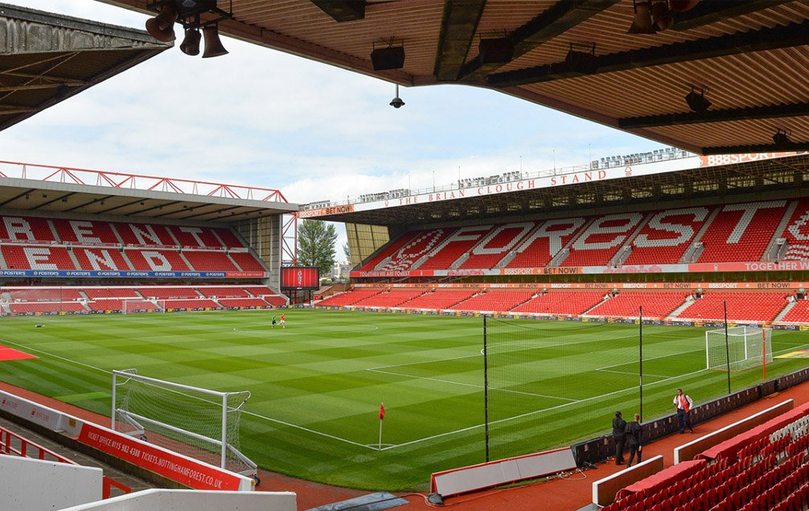
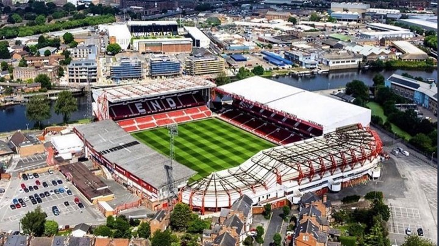

NOTTINGHAM FOREST
Nombre completo: Nottingham Forest Football Club
Apodo: Tricky Trees (Arboles astutos)
Fundacion: 1865
Ciudad: West Bridgford, Nottinghamshire
Estadio: City Ground
TITULOS

Premier League
1
1977/78

Sky By Championship
2
1956/57 - 1993/94

Fa Cup
2
1897/98 - 1958/59

Community Shield
1
1978

Carabao Cup
4
1977/78 - 1978/79 - 1988/89 - 1989/90

UEFA Champions League
2
1978/79 - 1979/80

Supercopa UEFA
1
1979
ESTADIO
Nombre: City Ground
Fundacion: 1898
Ciudad: Nottingham
Capacidad: 30.445 espectadores

